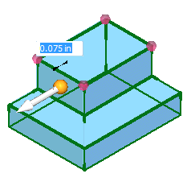
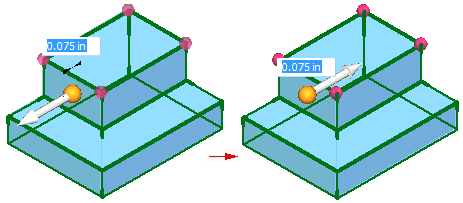
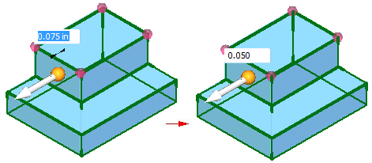
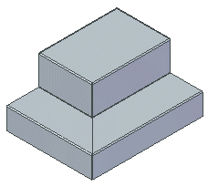

Convert a part to sheet metal
Choose Tools tab→Transform group→Part to Sheet Metal
 .
.Click the linear edges to create the bends for the sheet metal part.

(Optional) Click the direction arrow to change the thickness side.

(Optional) Type a value to change the face thickness.

Right-click to convert the part.

Note:
You can also select a partially cylindrical face on a part model to define the bend for the sheet metal part.

Learn how to convert a part to sheet metal by watching the following video.
How do I
Override the corner treatmentOverride the bend values
Transform a document to a synchronous sheet metal part
Transform a sheet metal part
Rip a corner of a sheet metal part
Learn more
Converting part documents to sheet metalLook up more details
Part to Sheet Metal commandPart to Sheet Metal Options dialog box
Thin Part to Synchronous Sheet Metal command
Thin Part to Synchronous Sheet Metal command bar
Thin Part to Sheet Metal command
Thin Part to Sheet Metal command bar
Thin Part to Sheet Metal Options dialog box
Rip Corner command
Rip Corner command bar